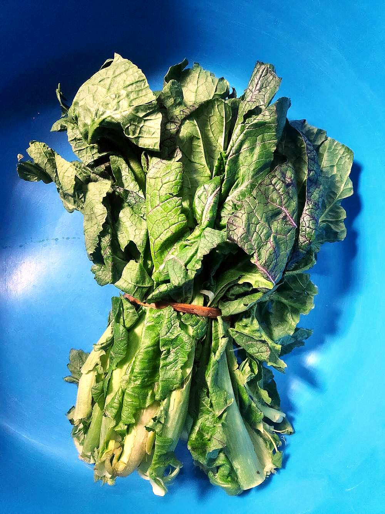

Haak
kashmiri greens boiled whole in mustard oil, chilli and hing, served in their own broth

Allergens: none of the common ones
Ingredients
Quantities for 4.
- 500g, leaves stripped from the thick stalks Mustard Greensstands in for haak, the broad Kashmiri collard; collard greens or spinach also work
- 3 tbsp Mustard Oil
- 3 whole, slit lengthways Green ChilliKashmiri long green chillies are mild. Use fewer hot ones
- 1/4 tsp Asafoetidause compounded-free hing to keep the dish gluten-free
- 600ml Water
- 1/2 tsp Dry Ginger Powderoptional
- a pinch Baking Sodakeeps the leaves bright green; leave it out if you preferoptional
- to taste Salt
Cookware
stovetop
Before you start
- Wash the leaves in three changes of water. Haak is grown in mud and grit hides in the folds.
- Leave the leaves whole or torn in half. Haak is never finely chopped, and the broth it makes, haakh ras, is spooned over rice as part of the dish.
- Get the pan and the oil properly hot before anything goes in; this cooks in under 20 minutes and there is no time to catch up.
Method
- Heat the mustard oil in a wide pan until it just begins to smoke, then take it off the heat for 20 seconds.Smoking the oil first burns off the raw pungency. Skip it and the greens taste acrid.
- Add the hing and the slit chillies and let them sizzle for 15 seconds.
- Pour in the water, add the salt and dry ginger, and bring to a hard boil.
- Push the leaves in a handful at a time, letting each batch wilt before the next goes in, about 2 minutes in all.
- Boil uncovered on high for 12 minutes, stirring twice, until the leaves are tender but still hold their shape.Uncovered and on high is what keeps haak green; a lid turns it olive-brown within minutes.
- Stir in the baking soda if using, and taste. The broth should be well salted, since it is eaten with rice.
- Serve immediately in a deep bowl with plenty of its broth, alongside plain rice.
Storage
Eat the same day; haak dulls in colour and flavour overnight. If you must keep it, refrigerate up to 24 hours and reheat briefly, uncovered, over high heat.
Nutrition Good estimate
| Per serving170 g | Per 100 g | |
|---|---|---|
| Calories | 141+ kcal | 84+ kcal |
| Protein | 4.3+ g | 2+ g |
| Carbohydrate | 9.3+ g | 6+ g |
| of which sugars | 3.4+ g | 2+ g |
| Fibre | 4.6+ g | 3+ g |
| Fat | 11.1+ g | 6+ g |
| of which saturated | 1.2+ g | 1+ g |
| of which unsaturated | 8.6+ g | 5+ g |
The + means ingredients given to taste rather than by weight are counted as zero, so the true figure is a little higher than shown. Worked out from the listed quantities; most of the ingredient list could be weighed. Ingredients given to taste rather than by weight are counted as zero, so the real figure is a little higher than this. The + says so. Some ingredients have no exact match in the nutrient database and use the nearest equivalent: asafoetida. Estimated from raw ingredients using USDA FoodData Central. Cooking changes are not modelled, and added salt is excluded, so sodium is not given.
Recipe v1.0.0, last updated 2026-07-31. Curated for Khaana and kept under version control.